Plotting Functions for the bayestestR Package
bayestestR.Rmd##Setup and Model Fitting
library(bayestestR)
library(insight)
library(see)
library(rstanarm)
library(ggplot2)
theme_set(theme_modern())set.seed(123)
# model with fixed effects only
model <- rstanarm::stan_glm(Sepal.Length ~ Petal.Width * Species, data = iris)
# model with fixed and random effects as well as zero-inflation component
model2 <- insight::download_model("brms_zi_3")Probability of Direction (pd)
result <- p_direction(model)
result
#> # Probability of Direction (pd)
#>
#> Parameter pd
#> (Intercept) 100.00%
#> Petal.Width 92.67%
#> Speciesversicolor 92.40%
#> Speciesvirginica 80.97%
#> Petal.Width:Speciesversicolor 77.48%
#> Petal.Width:Speciesvirginica 62.95%
plot(result)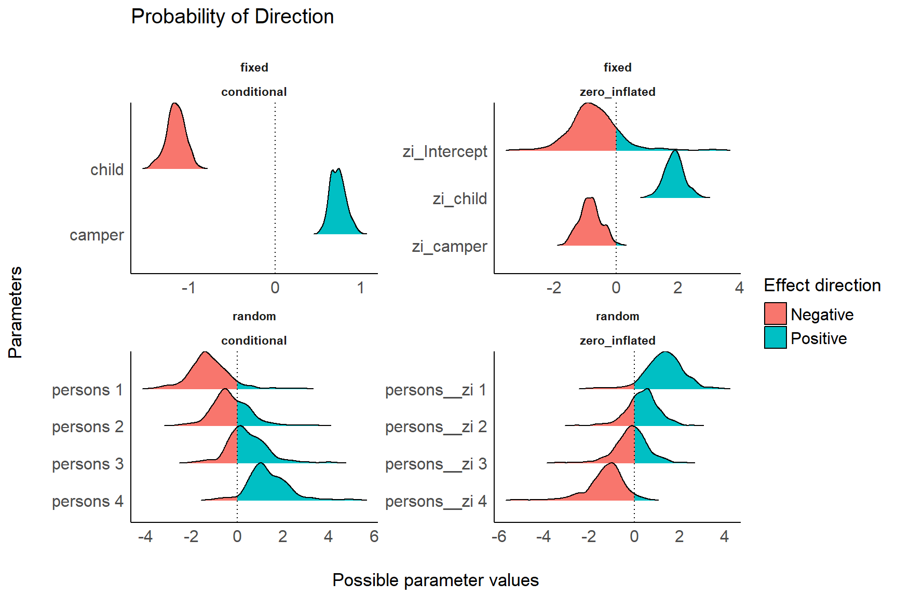
result <- p_direction(model2, effects = "all", component = "all")
result
#> # Probability of Direction (pd)
#>
#> # fixed effects, conditional component
#>
#> Parameter pd
#> Intercept 94.00%
#> child 100.00%
#> camper 100.00%
#>
#> # fixed effects, zero-inflation component
#>
#> Parameter pd
#> Intercept 87.60%
#> child 100.00%
#> camper 99.20%
#>
#> # random effects, conditional component
#>
#> Parameter pd
#> persons 1 94.00%
#> persons 2 66.00%
#> persons 3 70.80%
#> persons 4 96.00%
#>
#> # random effects, zero-inflation component
#>
#> Parameter pd
#> persons 1 95.60%
#> persons 2 72.40%
#> persons 3 58.00%
#> persons 4 97.20%
plot(result)

Point Estimates
result <- point_estimate(model)
result
#> # Point Estimates
#>
#> Parameter Median
#> (Intercept) 4.79
#> Petal.Width 0.88
#> Speciesversicolor -0.71
#> Speciesvirginica 0.45
#> Petal.Width:Speciesversicolor 0.51
#> Petal.Width:Speciesvirginica -0.22
plot(result)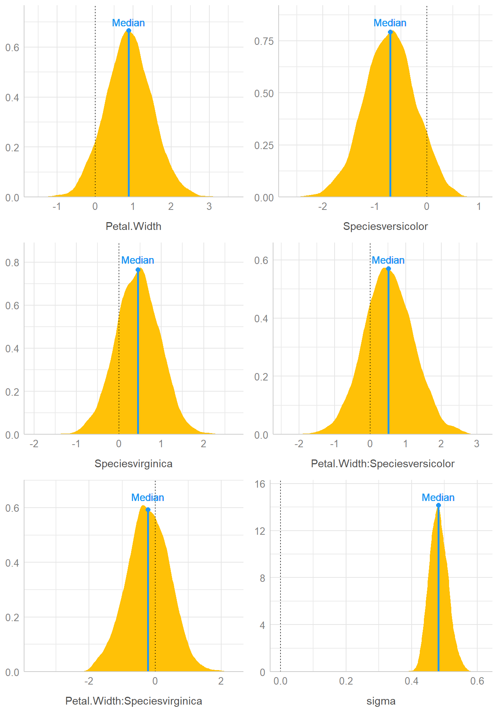
result <- point_estimate(model, centrality = c("map", "mean"))
result
#> # Point Estimates
#>
#> Parameter Mean MAP
#> (Intercept) 4.79 4.77
#> Petal.Width 0.88 0.86
#> Speciesversicolor -0.71 -0.67
#> Speciesvirginica 0.44 0.51
#> Petal.Width:Speciesversicolor 0.52 0.43
#> Petal.Width:Speciesvirginica -0.22 -0.35
plot(result, panel = FALSE)[[5]]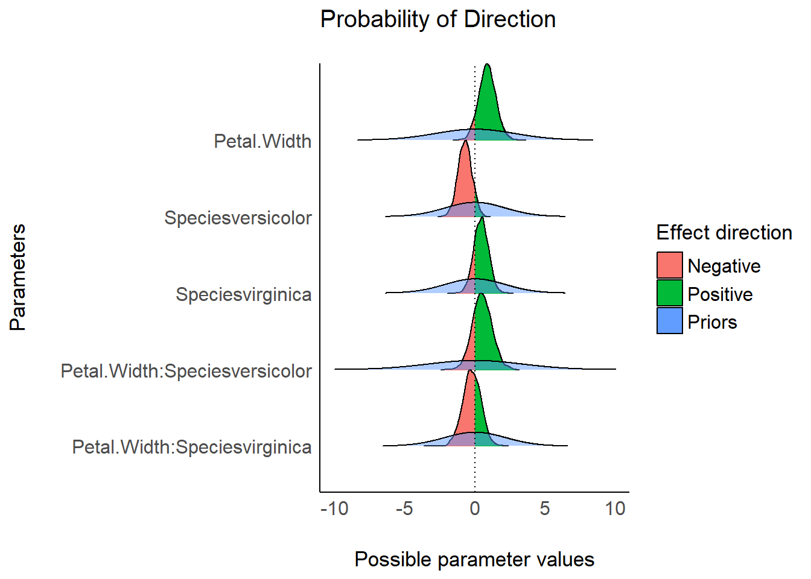
Highest Density Interval (HDI)
result <- hdi(model, ci = c(0.5, 0.75, 0.89, 0.95))
result
#> # Highest Density Intervals
#>
#> Parameter 50% HDI
#> (Intercept) [ 4.69, 4.91]
#> Petal.Width [ 0.47, 1.27]
#> Speciesversicolor [-1.05, -0.39]
#> Speciesvirginica [ 0.01, 0.70]
#> Petal.Width:Speciesversicolor [-0.01, 0.91]
#> Petal.Width:Speciesvirginica [-0.61, 0.26]
#>
#>
#> Parameter 75% HDI
#> (Intercept) [ 4.61, 4.98]
#> Petal.Width [ 0.26, 1.64]
#> Speciesversicolor [-1.35, -0.21]
#> Speciesvirginica [-0.10, 1.07]
#> Petal.Width:Speciesversicolor [-0.34, 1.23]
#> Petal.Width:Speciesvirginica [-0.92, 0.55]
#>
#>
#> Parameter 89% HDI
#> (Intercept) [ 4.53, 5.05]
#> Petal.Width [-0.18, 1.78]
#> Speciesversicolor [-1.51, 0.06]
#> Speciesvirginica [-0.42, 1.21]
#> Petal.Width:Speciesversicolor [-0.60, 1.61]
#> Petal.Width:Speciesvirginica [-1.27, 0.76]
#>
#>
#> Parameter 95% HDI
#> (Intercept) [ 4.47, 5.13]
#> Petal.Width [-0.25, 2.14]
#> Speciesversicolor [-1.62, 0.29]
#> Speciesvirginica [-0.61, 1.39]
#> Petal.Width:Speciesversicolor [-0.84, 1.85]
#> Petal.Width:Speciesvirginica [-1.51, 0.99]
plot(result) + scale_fill_flat()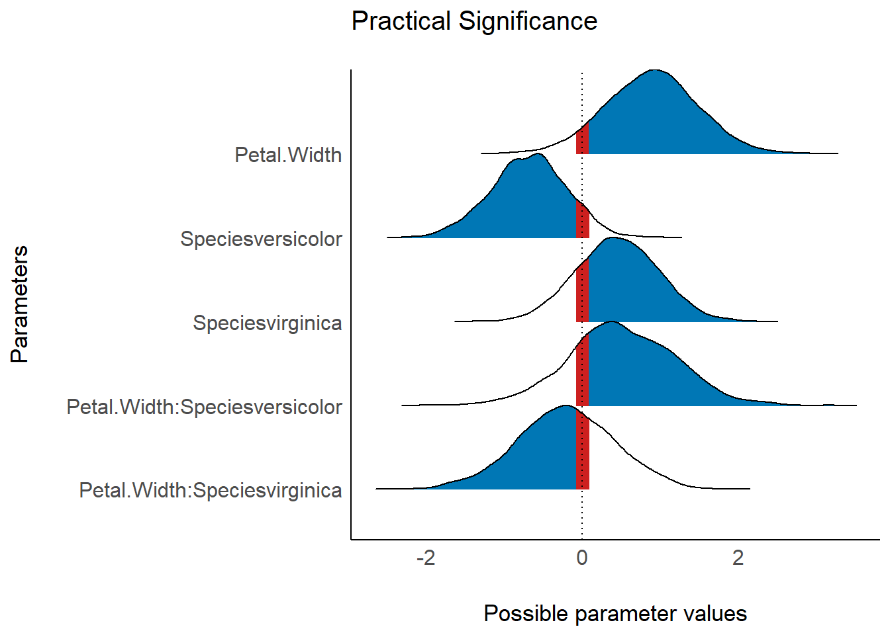
result <- hdi(model2, ci = c(0.5, 0.75, 0.89), effects = "all", component = "all")
plot(result) + scale_fill_metro()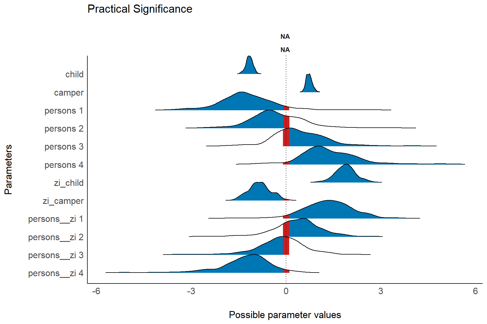
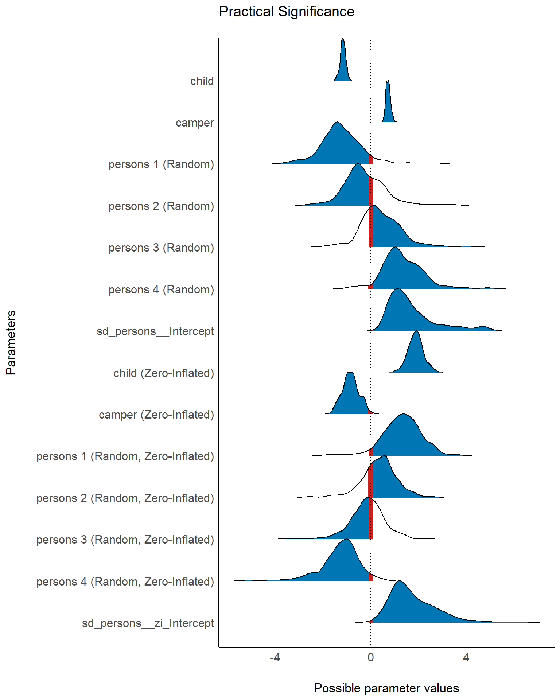
Region of Practical Equivalence (ROPE)
result <- rope(model, ci = c(0.9, 0.95))
result
#> # Proportions of samples inside the ROPE [-0.08, 0.08]:
#>
#> ROPE for the 90% HDI:
#>
#> Parameter inside ROPE
#> (Intercept) 0.00 %
#> Petal.Width 3.92 %
#> Speciesversicolor 5.72 %
#> Speciesvirginica 10.39 %
#> Petal.Width:Speciesversicolor 8.66 %
#> Petal.Width:Speciesvirginica 10.69 %
#>
#>
#> ROPE for the 95% HDI:
#>
#> Parameter inside ROPE
#> (Intercept) 0.00 %
#> Petal.Width 3.71 %
#> Speciesversicolor 5.42 %
#> Speciesvirginica 9.84 %
#> Petal.Width:Speciesversicolor 8.21 %
#> Petal.Width:Speciesvirginica 10.13 %
plot(result, rope_color = "red") +
scale_fill_brewer(palette = "Greens", direction = -1)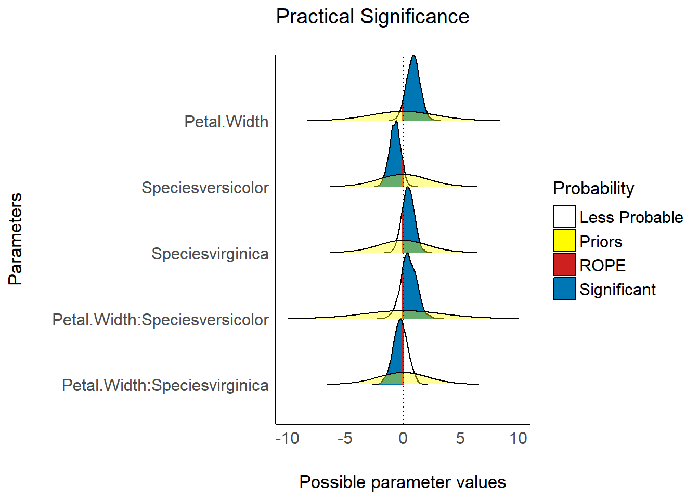
result <- rope(model2, ci = c(0.9, 0.95), effects = "all", component = "all")
result
#> # Proportions of samples inside the ROPE [-0.10, 0.10]:
#>
#> ROPE for the 90% HDI:
#>
#> # fixed effects, conditional component
#>
#> Parameter inside ROPE
#> Intercept 2.65 %
#> child 0.00 %
#> camper 0.00 %
#>
#> # fixed effects, zero-inflation component
#>
#> Parameter inside ROPE
#> Intercept 6.19 %
#> child 0.00 %
#> camper 0.00 %
#>
#> # random effects, conditional component
#>
#> Parameter inside ROPE
#> persons 1 1.33 %
#> persons 2 8.41 %
#> persons 3 11.95 %
#> persons 4 0.00 %
#>
#> # random effects, zero-inflation component
#>
#> Parameter inside ROPE
#> persons 1 0.00 %
#> persons 2 11.95 %
#> persons 3 14.16 %
#> persons 4 1.33 %
#>
#>
#> ROPE for the 95% HDI:
#>
#> # fixed effects, conditional component
#>
#> Parameter inside ROPE
#> Intercept 2.51 %
#> child 0.00 %
#> camper 0.00 %
#>
#> # fixed effects, zero-inflation component
#>
#> Parameter inside ROPE
#> Intercept 5.86 %
#> child 0.00 %
#> camper 0.00 %
#>
#> # random effects, conditional component
#>
#> Parameter inside ROPE
#> persons 1 2.09 %
#> persons 2 7.95 %
#> persons 3 11.30 %
#> persons 4 0.84 %
#>
#> # random effects, zero-inflation component
#>
#> Parameter inside ROPE
#> persons 1 1.67 %
#> persons 2 11.30 %
#> persons 3 13.39 %
#> persons 4 1.67 %
plot(result, rope_color = "grey70") +
scale_fill_social()
Test for Practical Equivalence
result <- equivalence_test(model)
result
#> # Test for Practical Equivalence
#>
#> ROPE: [-0.60 0.60]
#>
#> Parameter H0 inside ROPE 89% HDI
#> (Intercept) Rejected 0.00 % [36.27 51.85]
#> wt Rejected 0.00 % [-5.63 -1.97]
#> gear Undecided 0.52 % [-1.83 0.73]
#> cyl Rejected 0.00 % [-2.80 -0.82]
#> disp Accepted 1.00 % [-0.01 0.02]
plot(result) +
theme_blackboard() +
scale_fill_material()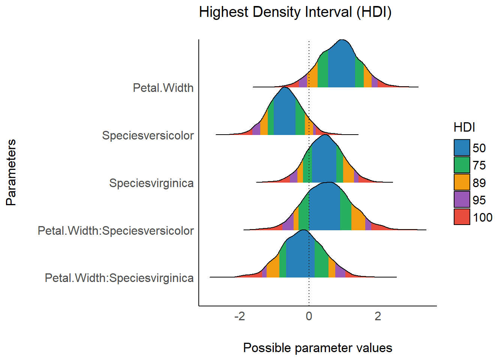
result <- equivalence_test(model, ci = c(.89, .95))
result
#> # Test for Practical Equivalence
#>
#> ROPE: [-0.60 0.60]
#>
#> Parameter H0 inside ROPE 89% HDI
#> (Intercept) Rejected 0.00 % [36.27 51.85]
#> wt Rejected 0.00 % [-5.63 -1.97]
#> gear Undecided 0.52 % [-1.83 0.73]
#> cyl Rejected 0.00 % [-2.80 -0.82]
#> disp Accepted 1.00 % [-0.01 0.02]
#>
#> Parameter H0 inside ROPE 95% HDI
#> (Intercept) Rejected 0.00 % [33.54 53.10]
#> wt Rejected 0.00 % [-6.09 -1.45]
#> gear Undecided 0.49 % [-2.07 1.09]
#> cyl Undecided 0.01 % [-2.98 -0.55]
#> disp Accepted 1.00 % [-0.02 0.03]
plot(result) +
theme_abyss() +
scale_fill_flat()
Bayes Factors (BFs)
Bayes Factors for Model Parameters
Plotting the result of a call to bayesfactor_parameters results in a plot presenting the prior and posterior distributions for each parameter (note that by default show_intercept = FALSE). When a point null was tested, two dots represent the density of the null at the value - the ratio of their heights is the value of the Savage-Dickey Bayes factor:
result <- bayesfactor_parameters(model)
result
#> # Bayes Factor (Savage-Dickey density ratio)
#>
#> Parameter Bayes Factor Effects Component
#> (Intercept) 1.72e+05 fixed conditional
#> wt 19.09 fixed conditional
#> gear 0.05 fixed conditional
#> cyl 4.14 fixed conditional
#> disp 0.12 fixed conditional
#>
#> * Evidence Against The Null: [0]
plot(result) +
scale_color_material() +
scale_fill_material()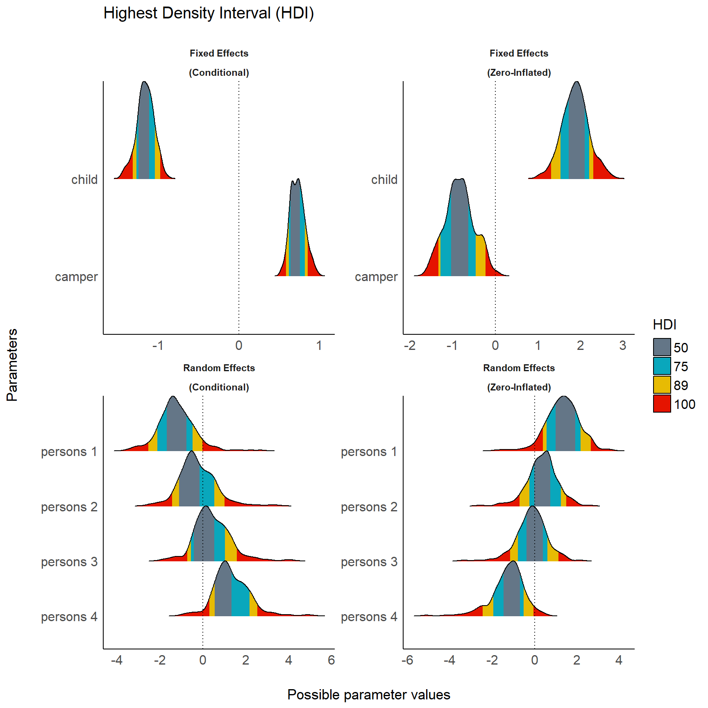
When an interval null was tested, two dashed lines mark the edges of the null interval at the value - the Bayes factor represents the degree by which the distribution mass of the posterior has shifted outside or inside the null interval relative to the prior distribution:
result <- bayesfactor_parameters(model, null = rope_range(model))
result
#> # Bayes Factor (Null-Interval)
#>
#> Parameter Bayes Factor Effects Component
#> (Intercept) 1.72e+05 fixed conditional
#> wt 13.87 fixed conditional
#> gear 0.03 fixed conditional
#> cyl 2.29 fixed conditional
#> disp 0.00e+00 fixed conditional
#>
#> * Evidence Against The Null: [-0.6, 0.6]
plot(result) +
scale_color_material() +
scale_fill_material()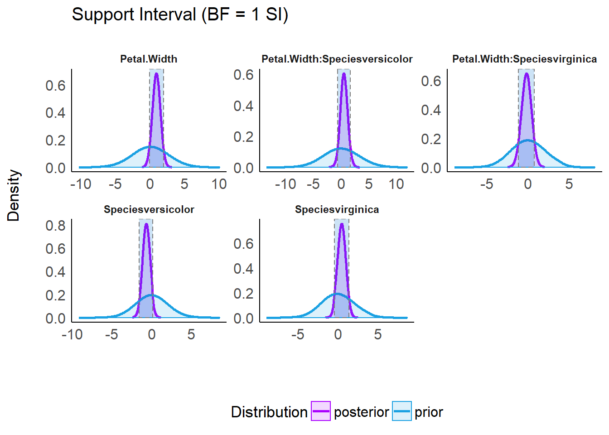
Bayes Factors for Model Comparison
lm0 <- lm(qsec ~ 1, data = mtcars)
lm1 <- lm(qsec ~ drat, data = mtcars)
lm2 <- lm(qsec ~ wt, data = mtcars)
lm3 <- lm(qsec ~ drat + wt, data = mtcars)
result <- bayesfactor_models(lm1, lm2, lm3, denominator = lm0)
result
#> # Bayes Factors for Model Comparison
#>
#> Model Bayes Factor
#> [1] drat 0.2
#> [2] wt 0.29
#> [3] drat + wt 0.05
#>
#> * Against Denominator: [4] (Intercept only)
#> * Bayes Factor Type: BIC approximationPizza plots are a visual way of representing the posterior probabilities of several models, with ratio of the areas of any two models corresponding to their posterior odds.1 It is possible to plot all compared models on one (pizza) pie:
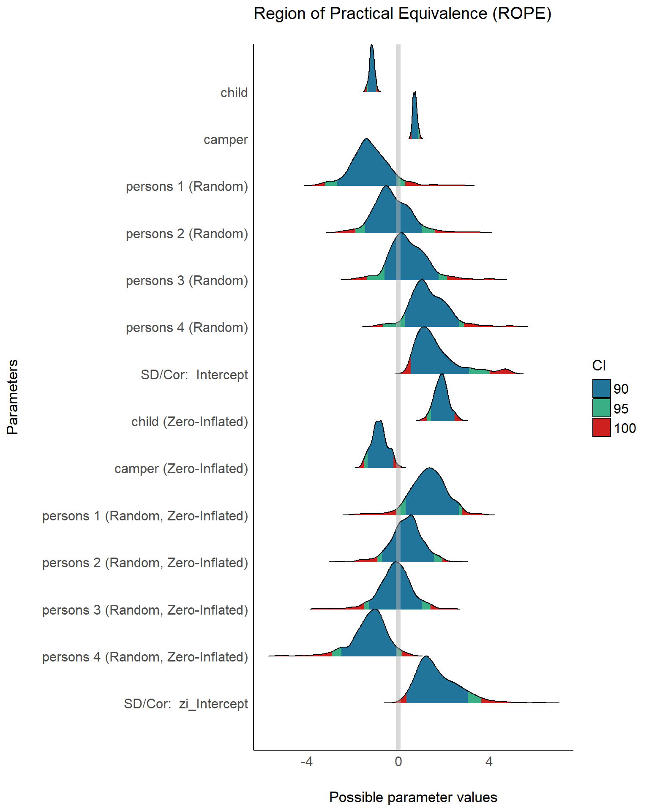
But it is also possible to plot one pizza for each model and the denominator model (and who doesn’t like more pizza?):
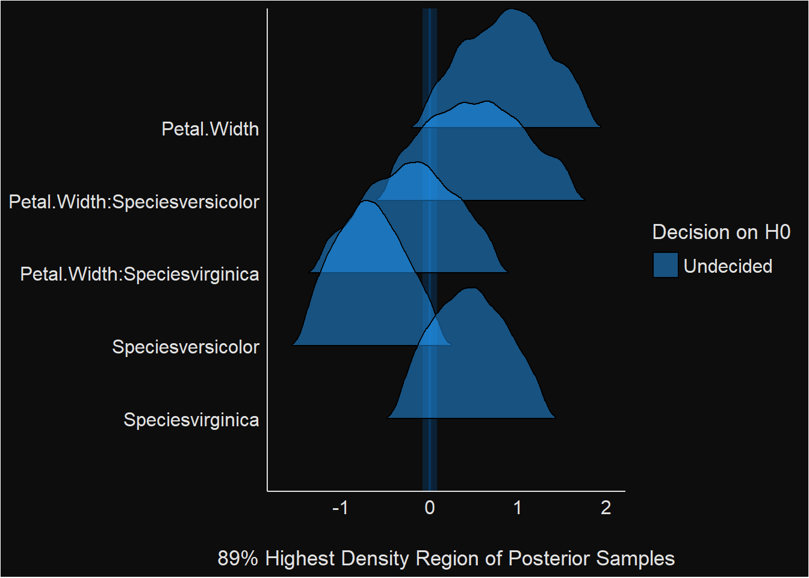
When all models are given equal prior probabilities, then all prior odds are 1, and the posterior odds are equal to the Bayes factor.↩